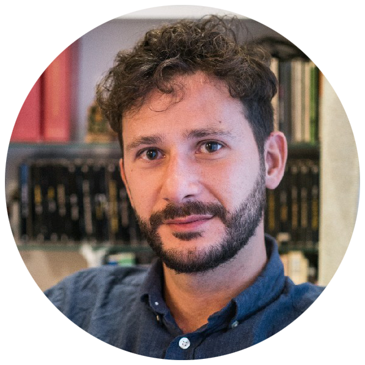
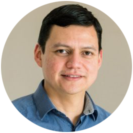

Geospatial Data Carpentry for Urbanism
10-11 February 2025
TU Delft Library, Blue Room
Meet the team






Icebreaker
Tell us your name and favourite geographic location.
What will you (not) learn?
Quoting from the pre-workshop survey:
- ✅ “to use Python or R to process data in a more efficient way”
- ✅ “R language”
- ✅ “Learning a new programming language”
- ✅ “I hope to learn skills that can make me more efficient and self-sufficient”
- ✅ “To be more efficient in collecting, managing and working with large datasets through the applications surrounding geodata analysis.”
- ✅ “To learn how to cope with large datasets in a more efficient way then using exel or GIS software.”
- 🚫 “How to conduct statistical analysis combing geo information”
- 🚫 “data scraping methods”
Program
Day 1
- 09:00-09:15 Introduction
- 09:15-12:15 Part 1. Introduction to R (incl. 1 break)
- 12:15-13:00 Lunch
- 13:00-16:40 Part 2. Working with vector data in R (incl. 1 break)
- 16:40-17:00 Closing & feedback
Day 2
- 09:00-09:10 Opening
- 09:10-12:15 Part 3. Working with raster data in R (incl. 1 break)
- 12:15-13:00 Lunch
- 13:00-16:40 Part 4: Working with OSM data and GIS in R (incl. 1 break)
- 16:40-17:00 Closing & feedback
- 17:00 Drinks
How do we work?
Code along with the instructor.
With 🟩 green and 🟥 red sticky notes you indicate that you 🟩 are or 🟥 are not on track when prompted by the instructor.
When you are stuck, put a 🟥 red sticky note on the back of your screen and a helper will approach you.
Copy & paste code from the livecode repository if you are behind and need to catch up.
Code of conduct
Use welcoming and inclusive language
Be respectful of different viewpoints and experiences
Gracefully accept constructive criticism
Focus on what is best for the community
Show courtesy and respect towards other community members
If you believe someone is violating the Code of Conduct, we ask that you report it to The Carpentries Code of Conduct Committee completing this form, who will take the appropriate action to address the situation.
Practicalities
The instructors and their screen will be filmed, but you will not be video- or audio-recorded. By participating in the workshop you acknowledge that the recording is taking place and that you don’t have any objection to it. We also kindly ask you to not video- and/or audio-record the session yourself.
Ph.D. candidates receive 1,5 GS credits if they attend and actively participate in the entire workshop - attendance forms will be handed out at the end of Day 2.
Lunch (both days), coffee/tea (breaks) and drinks (end of day 2) will be provided.